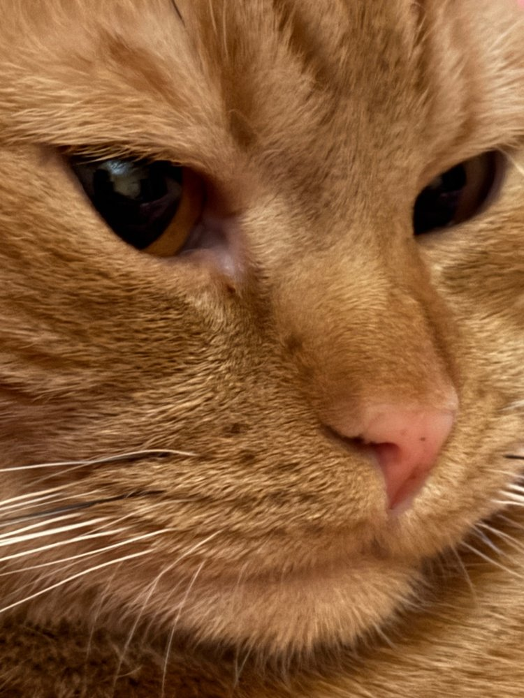
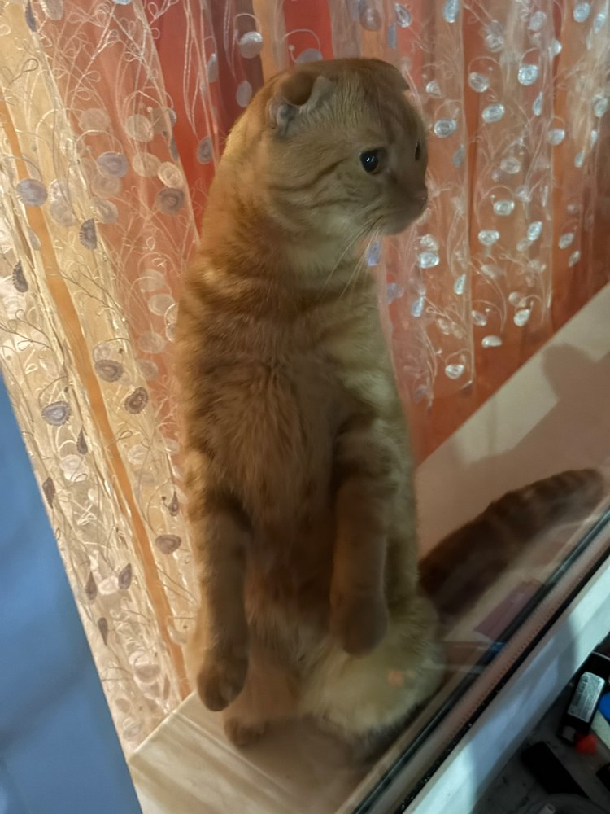
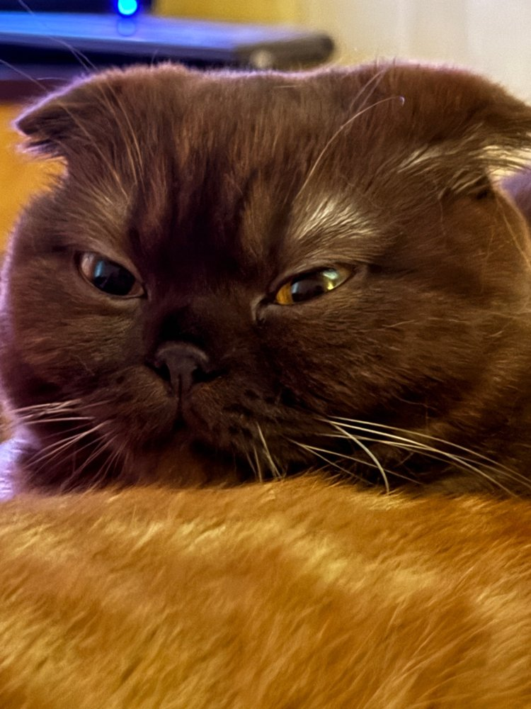
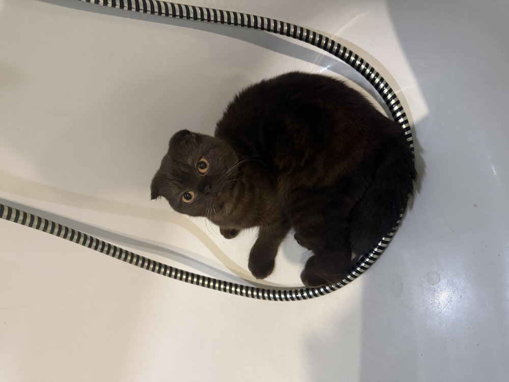
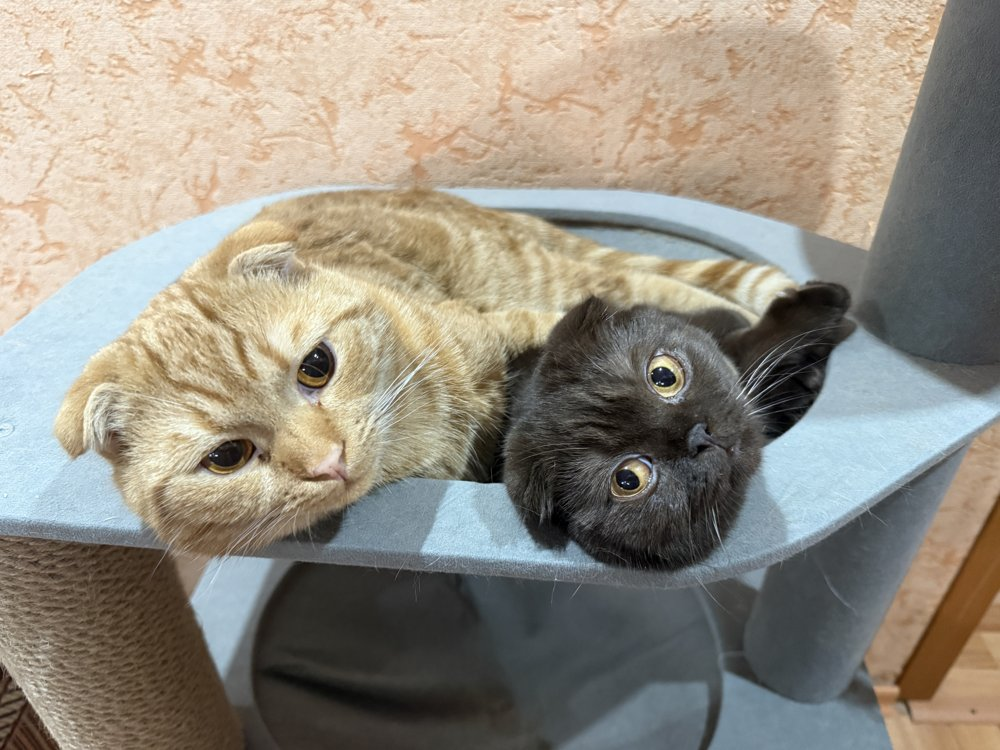

Ичиго
Рыжий богатырь · 6 кг чистой харизмы


О нём
Ичиго полтора года. Он считает себя хозяином квартиры и не без оснований: самый любвиобильный кот, где ты - там он.
Любимые занятия
- Спать в позе «подкованная подкова»
- Требовать играть в 6 утра — настойчиво
- Смотреть в окно: там бесплатное телевидение
Юки
Шоколадная шотландка · 4 кг скрытной мощи


О ней
Юки младше и легче Ичиго, болеет остеохондродисплазией но в драке, на удивление, за лучшее место на подоконнике выигрывает почти всегда. Уши сложены — так и задумано природой.
Любимые занятия
- Побеждать Ичиго в борьбе за подоконник
- Проверять коробки на прочность изнутри (очень любит грызть коробки)
- Самой первой просить еду и делать вид что не ела неделю
Вместе мы — сила
- Самые большие любитель поесть.
- Общий вес: 10 кг. Занимаемые места в квартире: 100%.
- Вот они вместе в своем таунхаусе:

Написать нам (то есть мне)
Заполни форму, и я когда-нибудь обязательно отвечу. Может быть.